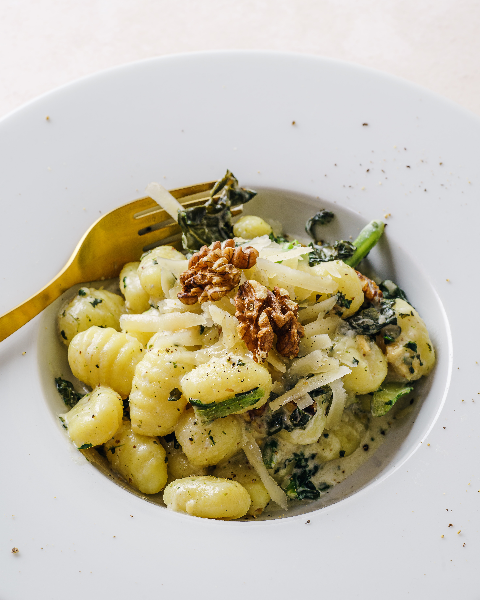

Our Generation’s Newest Drug: TikTok
This generation has a new addiction. Here is everything you need to know!

Streaming Services Podcast
If you're struggling with picking a streaming service to use, look no further.

Homemade Alfredo Gnocchi Recipe
In this video, I demonstrate how to make my homemade alfredo gnocchi recipe.
TikTok for Music Artists
If you are a music artist looking to promote your music for free, look no further than TikTok.